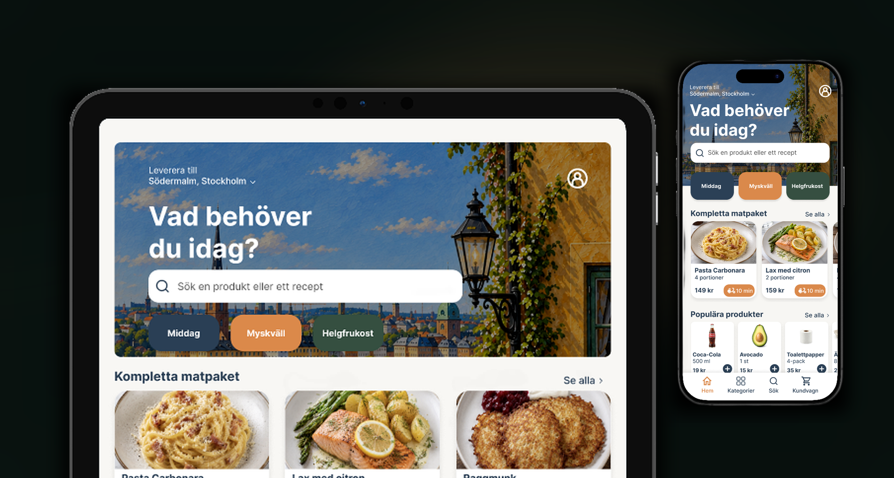
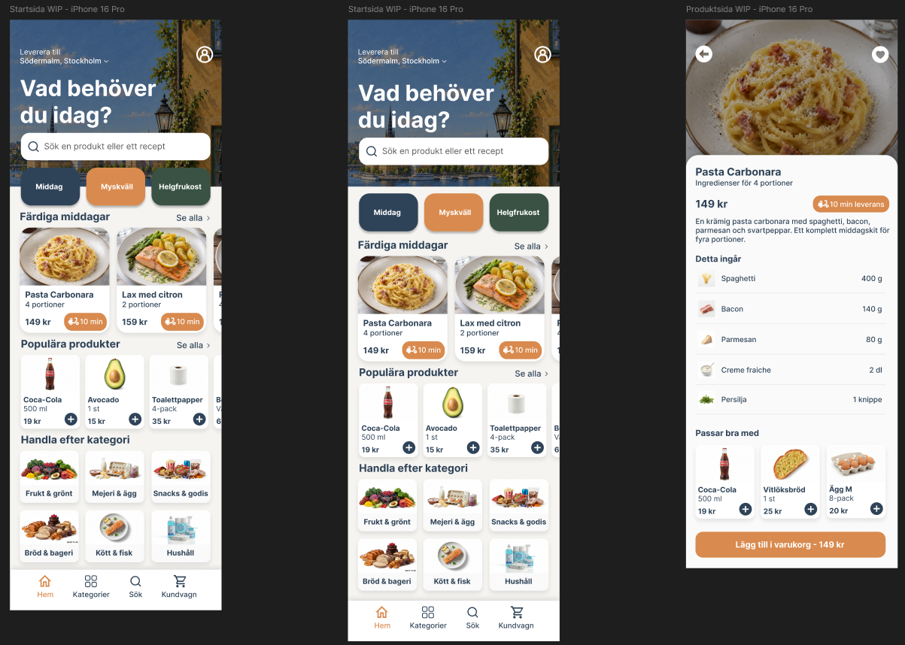
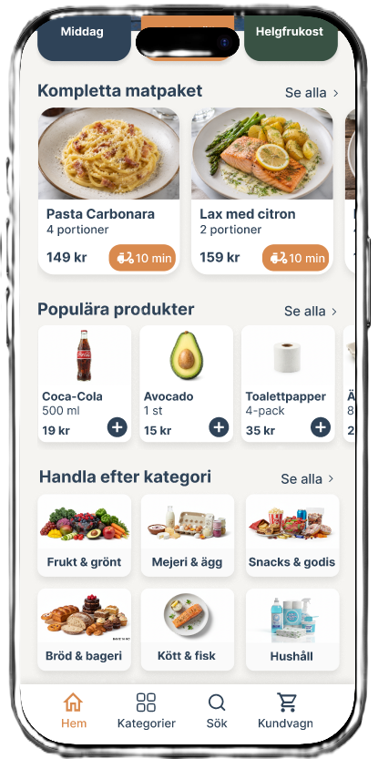
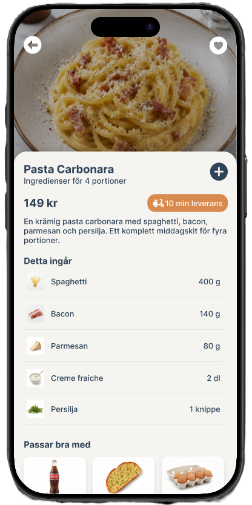

RESPONSIV UI • FIGMA
Matapp
Ett kursprojekt där jag designade ett responsivt matappkoncept för mobil och iPad. Fokus låg på informationshierarki, återanvändbara komponenter och att få samma designsystem att fungera på två skärmstorlekar.

INTERAKTIV PROTOTYP
Testa matappen
Den klickbara mobilprototypen finns i Figma och visar hur de viktigaste vyerna hänger ihop.
Målet
Jag ville att startsidan skulle fungera både för den som vet vad den söker och den som behöver inspiration. Därför kombineras kompletta maträtter, enskilda produkter och kategorier i samma vy.
Utmaningen var att få mycket innehåll att kännas överblickbart. Jag arbetade med rubriknivåer, grupperingar, luft och återkommande mönster för att skapa en tydlig läsordning.
Från utforskning till riktning
I början testade jag olika layouter, färger och sätt att prioritera innehållet. Att lägga versioner bredvid varandra gjorde det lättare att skilja förbättrad tydlighet från rena stilval.
Jag landade i ett visuellt system med mörkblå bas, orange accent och ljusa ytor. Färg används främst för funktion och prioritet, inte som dekoration.

Komponenter och konsekvens
I Figma byggde jag återkommande delar som komponenter. Det gjorde det enklare att hålla produktkort, knappar, navigation och kategorier konsekventa när designen förändrades.
Översikten behöver göra många typer av innehåll skannbara, medan produktsidan behöver bära mer detaljinformation. Samma komponenter och visuella regler används för att få båda vyerna att kännas som samma produkt.


De två vyerna visar hur komponenterna håller ihop gränssnittet även när innehåll och användarens mål förändras.
Feedback och iteration
Jag fick löpande feedback från klasskamrater och lärare och använde den för att justera bland annat avstånd, tydlighet och balansen mellan innehåll och återkommande element.
Det blev tydligt att en polerad skärm inte automatiskt är en färdig lösning. Små ändringar efter feedback gjorde stor skillnad för läsordning och vad som uppfattas som interaktivt.
Responsivt resultat
Slutresultatet finns som mobilvy och iPadvy. På den större ytan använder jag fler kolumner och bredare sektioner i stället för att bara skala upp mobilen, samtidigt som komponenter och hierarki känns igen.
Projektet gav mig framför allt mer praktisk erfarenhet av komponentbaserat arbete i Figma, responsiv UI design och iteration. Mobilprototypen knyter ihop skärmarna till ett faktiskt flöde.